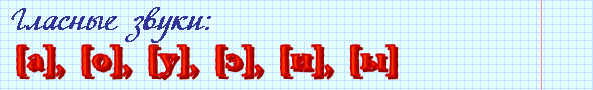
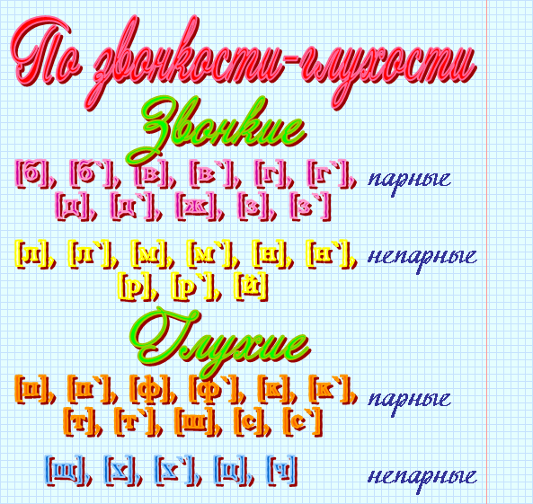
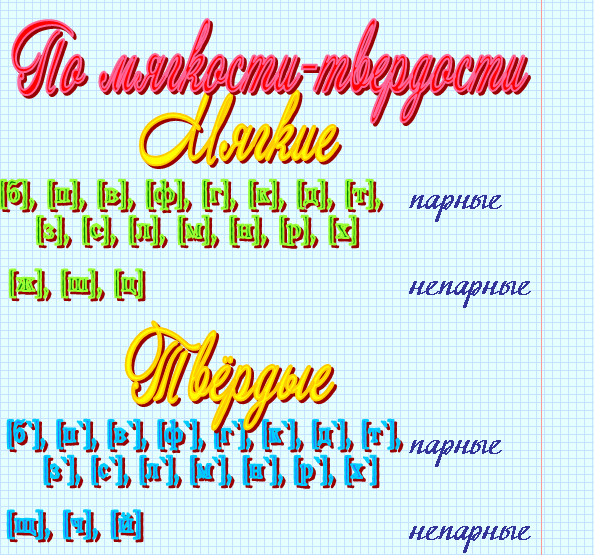

Звуками речи называются наименьшие единицы речи, из которых складываются слоги, а затем – слова.
|
Фонетика – это раздел языкознания, изучающий звуковой состав языка. Звуками речи называются наименьшие единицы речи, из которых складываются слоги, а затем – слова. |
|
Буквы – это условные графические (письменные) значки, служащие для обозначения на письме звуков речи. |
 |
а (буква), [а] (звук). |
 |
Буквы е, ё, ю, я в транскрипции не употребляются, потому что обозначают или два гласных звука (Например: юла - [й`ула]) или звуки э, о, у, а, одновременно указывая на мягкость предшествующего согласного (Например: мёд - [м`од]). |
|
Гласными называются звуки, при образовании которых воздух свободно проходит через полость рта, не встречая какой-либо преграды. |

|
Согласными называются звуки, при образовании которых воздух встречает в полости рта преграду. |


|
Фонетический слог – это один гласный или сочетание гласного с одним или несколькими согласными, произносимые одним выдыхательным толчком. |
|
Ударение – это выделение одного из слогов более сильным произношением гласного звука. Слог, на который падает ударение, называется ударным, остальные – безударными. |
|
Орфоэпия – раздел языкознания, в котором изучаются правила произношения звуков и слогов, а также правила постановки ударения. |
|
Правила орфоэпии 1. При произнесении безударные гласные о и а, а также е, я, и произносятся одинаково. Например: заря - [заря`], гора - [гара]; весна - [в`исна`], мячом - [м`ичо`м], литой - [л`ито`й]. 2. На конце слова и перед глухими согласными звуками звонкие согласные оглушаются, то есть произносятся как глухие. Например: дуб - [дуп], низкий - [н`и`ск`ий]. 3. Твердый согласный может смягчаться (становиться мягким), если после него следует мягкий согласный. Например: гвоздик - [гво`з`д`ик]. 4. Все согласные, кроме постоянно твердых, перед гласными и, е, ю, я произносятся мягко. Исключениями являются заимствованные слова, в которых согласные перед е могут оставаться твердыми. Например: термос - [тэ`рмас] но: академия - [акад`э`ми`йа]. |